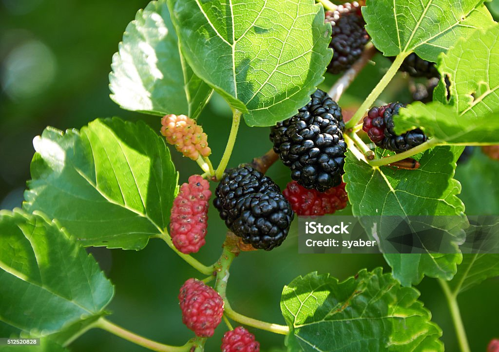

In the realm of nutritious fruits,the mulberry stands as a true gem, often overshadowed by its flashiers counterparts.However,beneath its unassuming exterior lies a powerhouse of health benifits wating to be discovered.Native to Asia,Europe,and North America, mulberries have been revered for centuries not only for their impressive nutrional profile.
Let's delve into the multiferious advantages that these small yet mighty fruits offer:
Mulberries are packed with antioxidants like anthocyanins, resveratrol, and flavonoids, which help to combat oxidative stress and reduce the risk of chronic diseases,cancer and diabetes.
The high levels of resveratrol found in mulberries have been linked to improved heart health by lowering cholestrol levels, reducing inflamation , and preventing the oxidation of LDL (bad) cholestrol.Regular consumption of mulberries can contributes to a healthier cardiovascular system and a reduced risk of heart related ailments.
Mulberries are rich in vitamins C , a potent immune booster that helps strengthen the body's defense against infection and illnesse. Incorporating mulberries into your diet can fortify your immune system ,keeping you feeling healthy and resilient year round.
Despite their natural sweetness,mulberries are relatively low in calories and fat while being high in fibre. This combination makes them an excellent addition to weight managment plans by promoting satiety, regulating blood sugar levels, and supporting digestive health.
Thanks to their high fibre content, mulberries can aid in digestion by promoting regularity, preventing constipation , and supporting a healthy gut microbiome .Fibre also acts as a prebiotic , fueling the growth of beneficial bacteria in the gut, which is essential for optimal digestive function and overall wellness.
Research suggest that the antioxidants present in mulberries may have neuroprotective effects, helping to safeguard brain health and cognitive function as we age.Regular consumption of mulberries may contribute to improved memory, concentration , and overall mental clarity.
Mulberries are incredibly versatile and can be enjoyed in various forms, including fresh , dreid, or as part of jams, jellies, sauces, and baked goods. Their sweet and savory dishes,making them a delightful addition to salads,smoothies,desserts, and even sauces.